The West Family
Francis West I — Easy to Hate, the Real Antagonist
Deputy Governor of the Colony and Dominion of Virginia. Married three times. He never stopped grieving his first wife, and over decades tried repeatedly — and in vain — to bring her back through ritually sacrificing people entirely under his power: servants, wards, debtors, anyone with no one positioned to protect them. He kept a hidden ritual room in the basement where this happened, again and again, for years. His household simply lost people, quietly, and no one with power ever asked where they went.
When his daughter Elizabeth came to him for help after her husband's death, he responded exactly the way he'd always treated people beneath him: as a problem to be managed, not a person to be helped.
Elizabeth West — The White Lady (Monster stat block →)
Fell in love with a local millworker and married him against her father's wishes in 1632. When he died in a mill accident, she came home with her infant son and asked her father for help. He told her coldly that she'd never find a good husband with another man's child in tow, and heavily implied that he could help her, if only she didn't have her son. Distraught and cornered, she drowned her son — and her father then married her off to Richard Saltonstall as though nothing unforgivable had happened. She died still trapped in that arrangement, and now haunts the manse, wanting revenge on the father who built the corner she couldn't see a way out of.
The living Elizabeth's years of pain, self-loathing and anger at her father created her ghost- but the White Lady is no longer a whole human- she's an angry, scared echo. She is a monster, but she's a monster that is an echo of the monstrous in all of us.
Francis West II — Justified, Not Forgiven (Monster stat block →)
Elizabeth's brother, close to her in life. Too late to save his sister from his choices, Francis Jr. learns what his father has done both to his sister and the people under West care for many years, and drowns Francis I in the estate's pond and passed it off as an accident — not in a blind rage, but because he was the one person who correctly assigned blame. He'd found his father's hidden ritual room and pieced together the pattern of disappearances over the years, but not in time to save his beloved sister from a similar fate: people treated as resources to spend and discard. He finally understood who'd actually built the trap they all lived in, and saw a way out. He's still haunted by his own choice, which is why he lingers as a ghost rather than having found peace — being right about the killing doesn't mean he's made peace with having done it.
He didn't remember all of the ritual room's victims. In his surviving journal, scattered in fragments around the house, he describes going around asking anyone in the household or town who'd been there long enough — trying to recover names, fragments, anything — for people his father had erased. He didn't recover everyone; what he did find is discoverable as journal entries throughout the Manse, and gathered into a private shrine he built over his father's own tomb.
Nathaniel West
A much later descendant, now a 300-year-old (technically 341) vampire, out of step with the modern world. Not central to tonight's plot, but present in the house and a potential complication or resource depending on how the party engages with him.
Other West Dead
As the teenagers explore the old manse, they are attacked by animated skeletons — first occasionally and by weak foes. The longer they are trapped, the more frequent and strong their skeletal adversaries become. These are the risen West dead, unnamed ancestors who are raised by the White Lady. They are Skelly I and Skelly II.
Timeline
Show / hide timeline
1623 — Francis I's younger brothers, John and Nathaniel De La Warr, die (England, before the Virginia branch of the family takes shape).
1632 — Elizabeth marries a local millworker against her father's wishes. Her husband's death, her return home with her infant son, and the tragedy that follows all happen in short order after this.
1633 — Francis II's journal entry on Patience (found in the Library).
1634 — Francis II's journal entry on Elias (found in the Southeast Servant's Quarters).
1635 — Francis II's journal entry on Caleb, the angriest of the three (found in the Southwest Servant's Quarters).
1636 — Francis II drowns Francis I in the estate's pond and writes his confession.
~1646 (calculated, not stated anywhere in-world) — if Nathaniel West is genuinely 341 years old as of tonight, this is roughly when he was born or turned.
1987 — tonight. The séance, the ritual, and everything that follows.
The Manse and Grounds
Shagbark Manse
Photo: the historic Mordecai House at Mordecai Historic Park, Raleigh, NC — used here as inspiration for Shagbark Manse.
The Manse was originally built by Francis West, but it has been expanded and redecorated over the years, so rooms show influence from a wide variety of time periods and styles. Now in disrepair, Tiffany's family has moved back in and began the process of reclaiming rooms from the dust and time. The players don't know what the layout of the house is until they build a map by moving through it. Use the PowerPoint document to reveal rooms as you enter them.
Second Floor
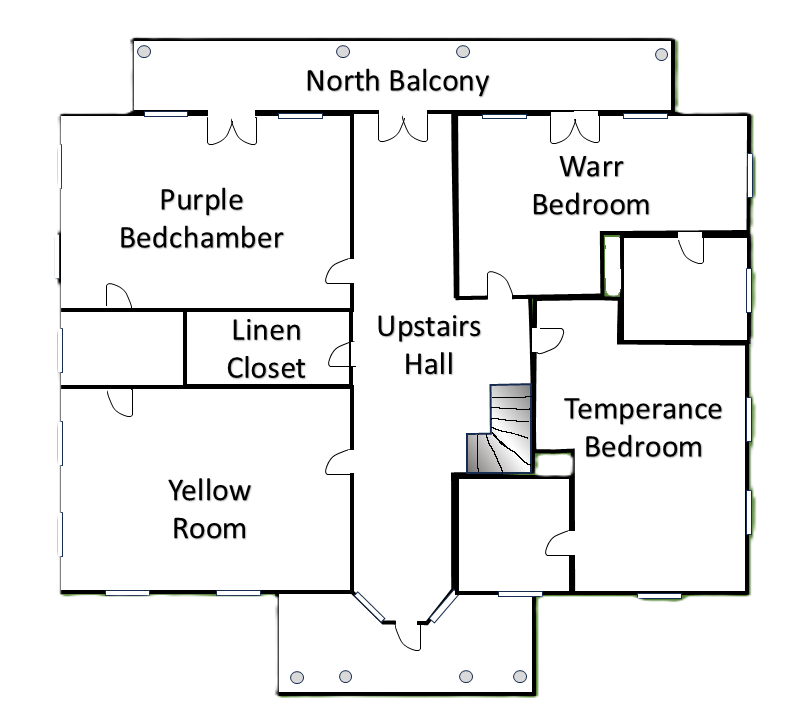
First Floor
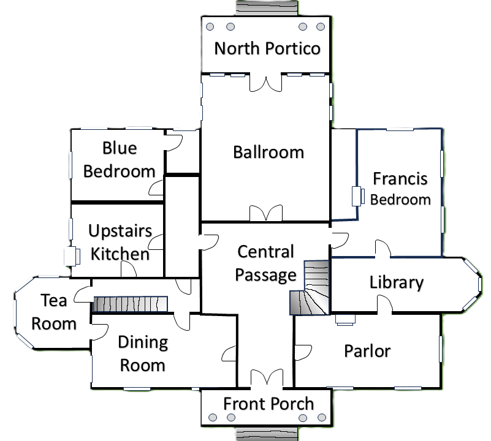
Players will start here, in the ballroom. It's up to them where to go from there.
Basement
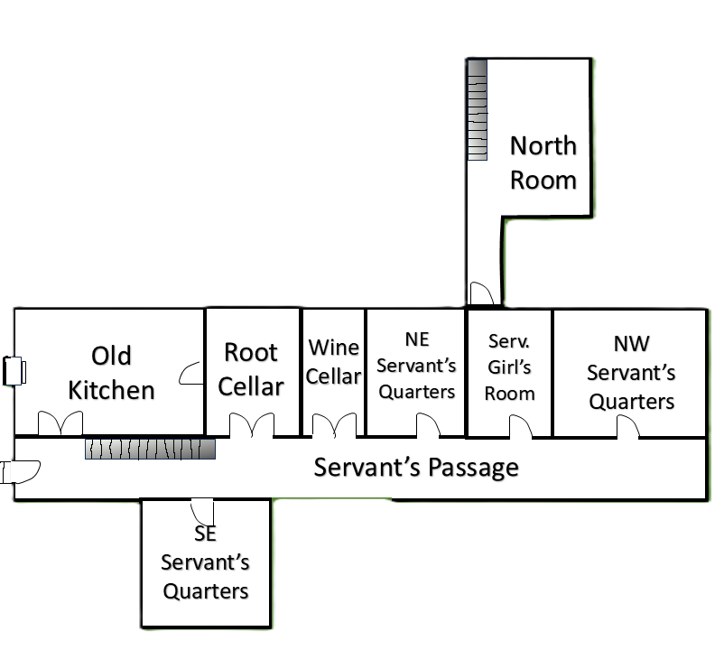
The Grounds
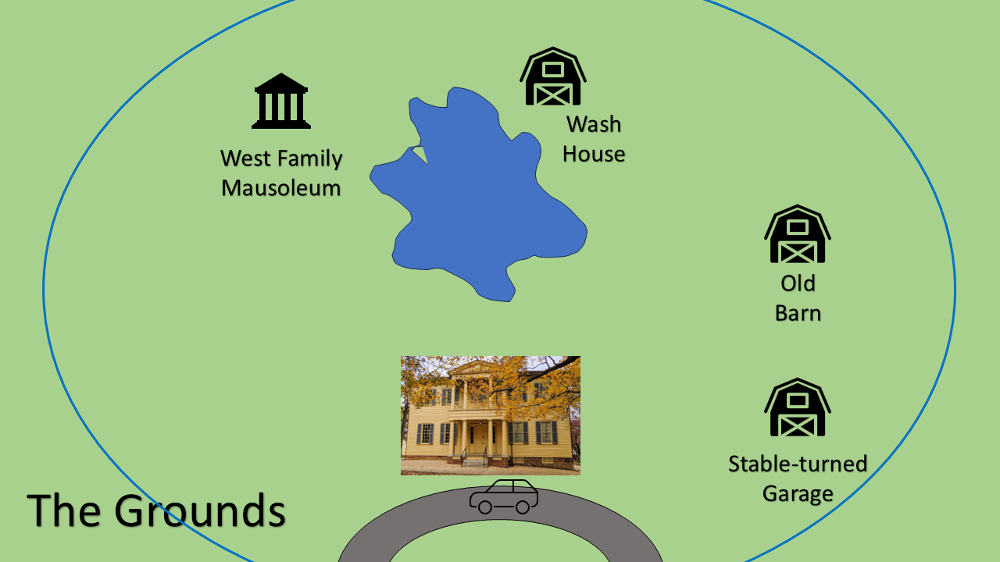
The Manse sits at the top of a stately driveway, overlooking the small and prosperous town, but it isn't the only building on the property. An old stable has been converted to a garage. There's another old Barn that hasn't been converted, where the players can meet Nathaniel, along with the wash house and the West Family Mausoleum, where the skeletons originate from, all arrayed around a sizable pond in the middle of the grounds. Around all of this is a magical mist barrier, that prevents the characters from leaving.
Four Eras Under One Roof
Because the Manse has been expanded and redecorated across generations, individual rooms don't share one consistent style — you'll find colonial, antebellum, federalist, gilded age, and postwar influences side by side, sometimes in adjoining rooms. None of this is assigned room-by-room in this document; treat the images below as a mood board and place styles wherever feels right as you describe each room.
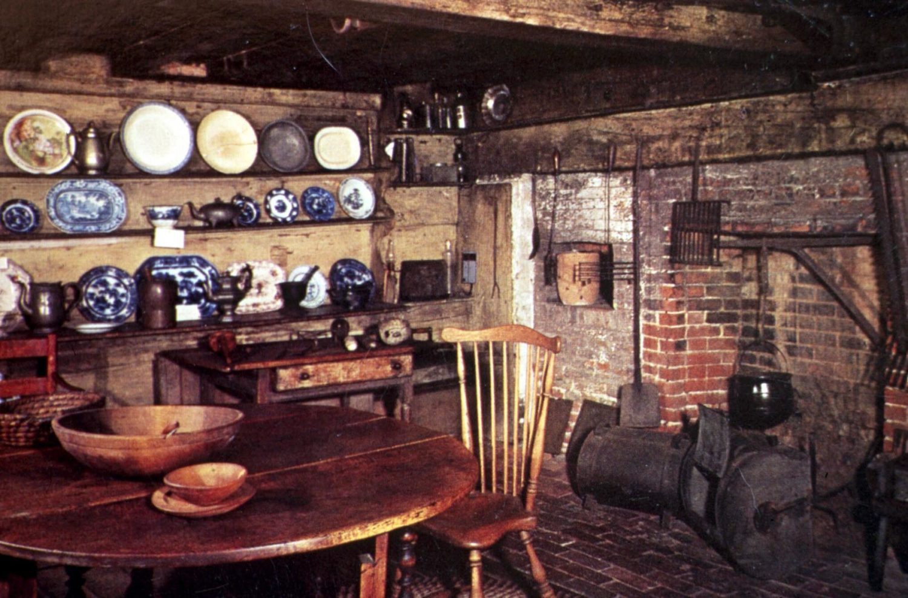
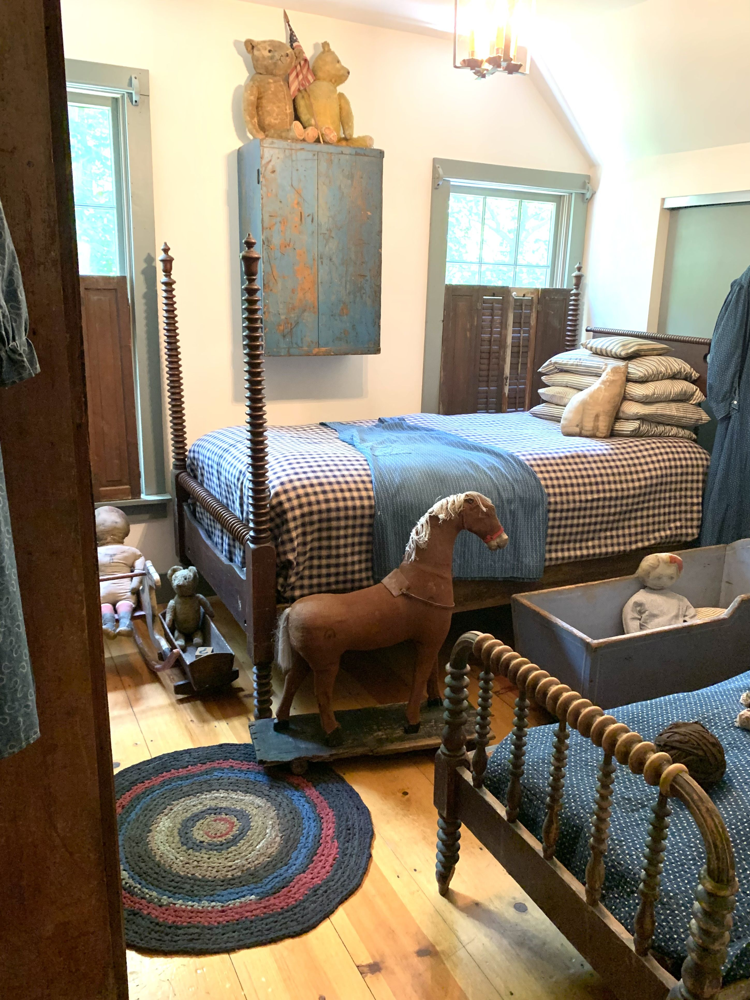
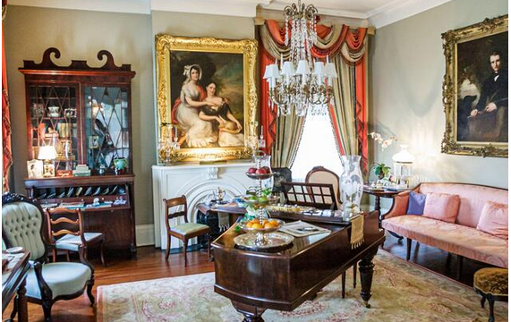
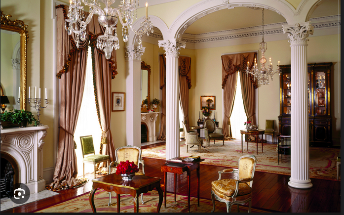
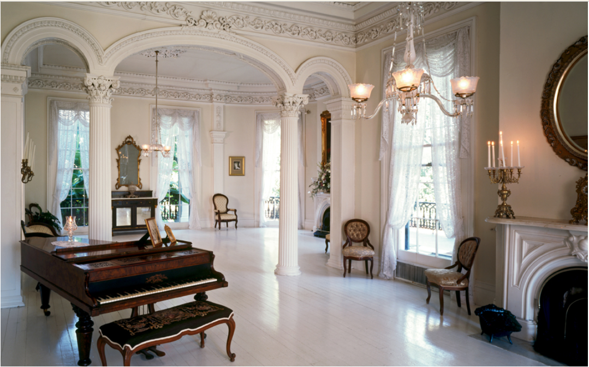
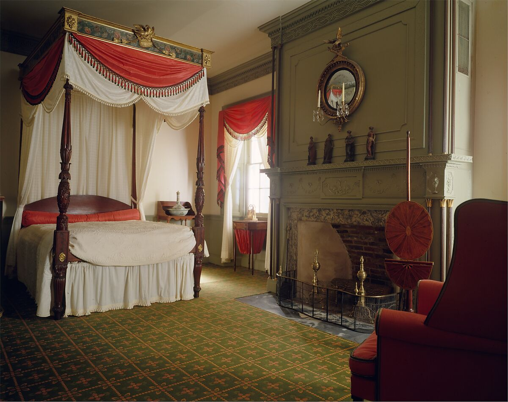
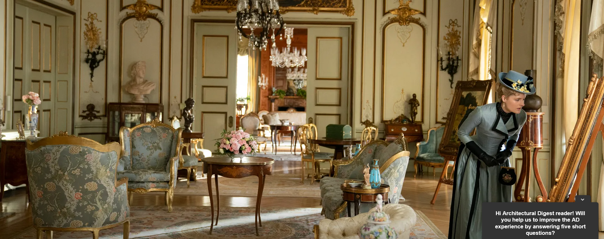
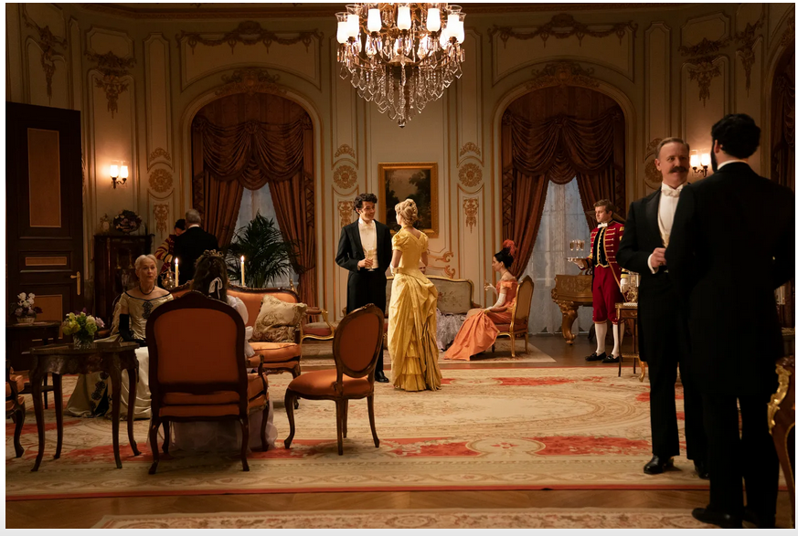
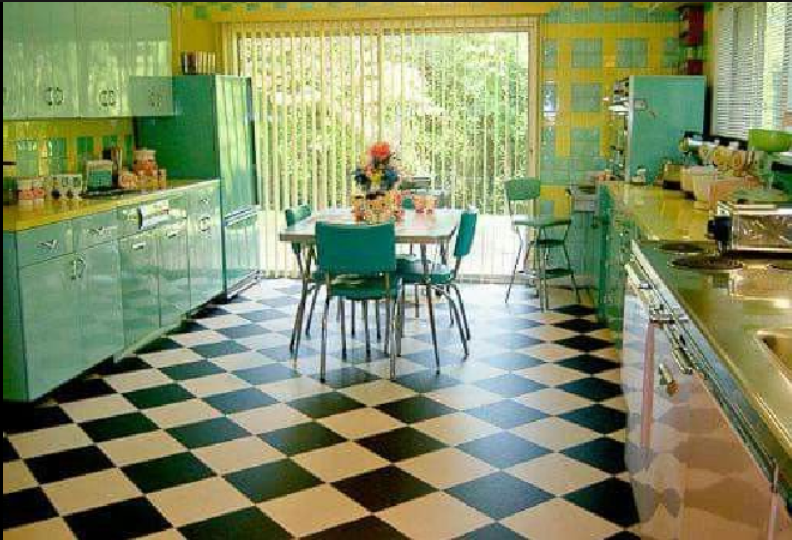
The aspects, floor, and window direction shown for each room (under Rooms Explored, once you pick "party currently in") are a starting guide, not a script — describe each room however fits the moment and the style you've chosen for it. Anything the party actually needs to know or that changes how a scene plays out lives in the Hints Browser instead, not in the room overview.
Within a room's hints, look for ones flagged ⚠ Mechanical effect before you improvise — those are the ones with a real rules impact (a forced roll, an NPC encounter, a lasting effect), like the Purple Bedchamber quietly convincing everyone they're cats. They're sorted to the top of a room's results in the Hints Browser so you see them first. Everything else is fair game to reskin, expand, or skip based on what you already know about the house.
The Night
Before the House
Earlier that day: Tiffany, new to town, is eating lunch with Corey, with whom she thinks she might be building a friendship, complaining that her parents are away for the weekend. Brandon overhears and invites himself over — then invites the rest of the group without Tiffany's knowledge. That evening they arrive with drinks, and despite her reservations, Tiffany lets them in and gives everyone a tour.
The Séance That Wasn't
In the library, someone finds an old book that explains how to hold a séance — and suggests they try it, tonight, for the manse's famous White Lady. The group gathers in the ballroom, draws a chalk circle, lights candles, pricks their fingers for a few drops of blood. The reader recites the incantation. Nothing happens — then the room explodes with otherworldly energy, throwing everyone from the circle. Everyone passes out.
What actually happened: several pages of the book were stuck together, and the rite performed was half séance, half a ritual to substantiate the dead — accidentally summoning a spirit and strengthening its bond to the material plane. This is discoverable later, in the book itself, back in the ballroom.
Waking Up
The players wake with no memory of who they are. The house is locked in on itself — no phone signal, no way out that anyone can find right away. As they explore, they'll piece together the house's history, their own identities, and each other's secrets (see the workbook's Knowledge and Hints tabs for the full, room-by-room breakdown).
The Four Endings
The White Lady will not return to her eternal slumber until one of these is achieved. The mist barrier will weaken in the sunlight of the new day, but if the players don't take care of the White Lady problem, the dawn will release the risen West dead on their town. The White Lady can be spoken to directly (Empathy, Deceive, or Provoke, difficulty and requirements noted per hint in the workbook) and will explain her need for vengeance if asked.
- End Game 1 — Burn Him: retrieve Francis I's remains from the family mausoleum and burn them, without ceremony, in the downstairs kitchen hearth. The house isn't built for a fire this size — it will catch fire. Expect significant physical resistance along the way.
- End Game 2 — Tell Her the Truth About Her Brother: reveal to the White Lady that Francis II killed their father by drowning him. Requires first discovering Francis II's action.
- End Game 3 — Expose Francis I: promise to reveal the truth about Francis I to the world. Requires first discovering his hidden ritual room in the basement.
- End Game 4 — Banish Her: use the ritual itself (the one they accidentally half-performed) to banish her properly, now that they understand how it actually works. The full ritual text is discoverable in the Southwest Servant's Quarters — one of the "missing" library volumes, relocated to storage downstairs.
Any of these can end the night. Nothing stops the party from trying more than one in sequence if an earlier attempt goes wrong.